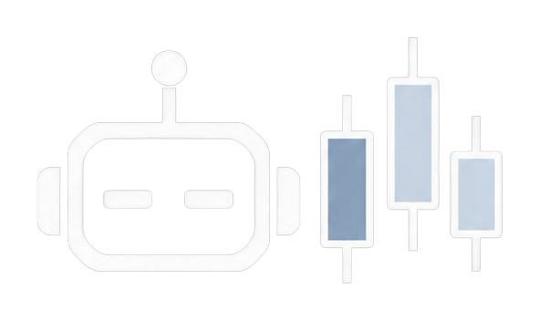
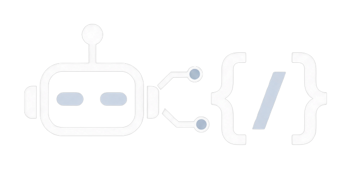

Est. 2024 / Software • Automation • Intelligence
Built for what’s next.
Precision software, automation and intelligent systems engineered to turn ambitious ideas into reality.
Welcome back
Here's what's waiting for you.
We build what comes next.
Software, automation and intelligence — architected for complexity, engineered for performance, and designed to evolve with the demands of the real world.
Software
Digital products engineered around real problems.
Automation
Systems that work without being told twice.
Intelligence
Technology that understands more than instructions.
No template. No shortcuts.
Real-time operational intelligence.
System performance, execution activity, and critical operational metrics — consolidated into a precise, real-time view.
Intelligence engineered for execution.
Built to process complex information, adapt to changing conditions, and transform decisions into reliable, automated execution.



Read the market before it moves.
A continuous read on market confidence, volatility, liquidity, and positioning — revealing the underlying conditions behind every market move.
Live market intelligence requires a connected data/analytics source — not yet integrated
From tick to execution.
Every price update passes through the same disciplined pipeline before a single order is placed.
The architecture behind the edge.
Six principles shaping how NUKRAX is designed, engineered, and built for execution.
Every metric, at a glance.
A consolidated read on performance — from market dynamics to portfolio-wide exposure.
Illustrative NUKRAX analytics module showing sample performance metrics, not live trading data: 74% win rate, 1.8 profit factor, 8.4% max drawdown, 12% risk exposure, 62% winning trades, 38% losing trades. Below these figures is a decorative illustrative candlestick chart and a decorative bar strip.
Illustrative data — not live performance
The infrastructure underneath.
Six connected systems working in concert, from signal generation to secure order routing.
Security engineered into every layer.
Capital and data security are built into the architecture, not added as an afterthought.
User Perspectives.
Real experiences from users putting NUKRAX to work in live markets.
The risk engine alone changed how I size positions. It's the first system that feels engineered rather than assembled.
Execution speed is genuinely different. Slippage on my fills dropped noticeably after switching over.
The SMC/ICT logic isn't a retail rehash — it actually respects liquidity the way institutions do.
Uptime has been flawless through every major news event I've traded so far this year.
Support and documentation are as precise as the code. Rare for a system this sophisticated.
Multi-timeframe confirmation cut my false entries dramatically. This is built for people who take it seriously.
Everything you need to know.
Still have a question after reading through? Reach out on Telegram or ask@nukrax.com.
01What platform does nukrax run on?
02Do I need coding experience to use an EA?
03Which instruments are supported?
04How is risk managed per trade?
05Can I run multiple EAs on the same account?
06What brokers are compatible?
07Do you offer backtest results?
08Is a VPS required?
09How often are strategies updated?
10What is the minimum account size?
11Do the EAs trade news events?
12Can I customize the risk settings?
13Is live support available?
14How does nukrax.tr differ from nukrax.cr?
15Will more Expert Advisors be released?
Live platform statistics
If You Can Think-IT
NUKRAX Can Build IT.
Through software and automation to intelligent systems — we transform complex ideas into technology built to perform in the real world.